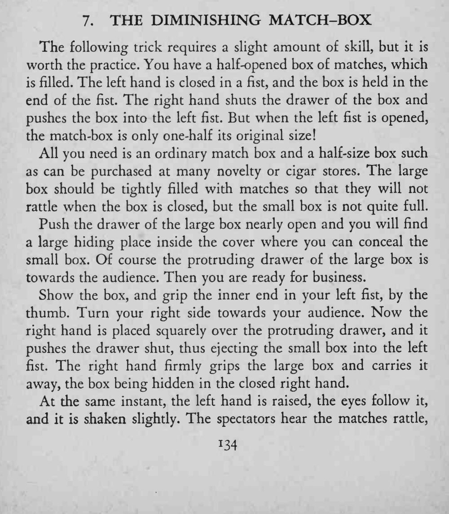
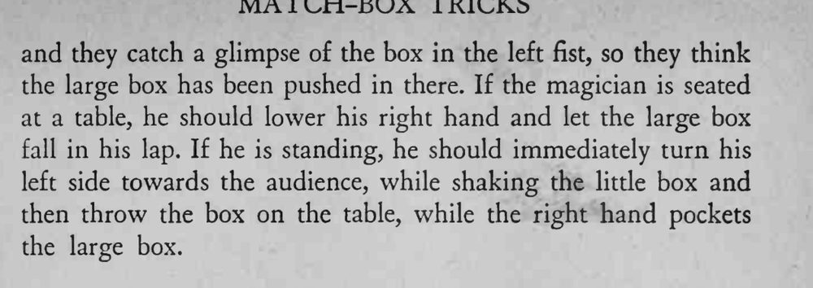

魔术师把一只半开的满盒火柴推进左拳，再摊开左手，手里的火柴盒竟缩小成原来的一半。
右拳不能松，大盒要在推合内屉的一瞬间被完全握住。


The following trick requires a slight amount of skill, but it is worth the practice. You have a half-opened box of matches, which is filled. The left hand is closed in a fist, and the box is held in the end of the fist. The right hand shuts the drawer of the box and pushes the box into the left fist. But when the left fist is opened, the match-box is only one-half its original size! All you need is an ordinary match box and a half-size box such as can be purchased at many novelty or cigar stores. The large box should be tightly filled with matches so that they will not rattle when the box is closed, but the small box is not quite full. Push the drawer of the large box nearly open and you will find a large hiding place inside the cover where you can conceal the small box. Of course the protruding drawer of the large box is towards the audience. Then you are ready for business. Show the box, and grip the inner end in your left fist, by the thumb. Turn your right side towards your audience. Now the right hand is placed squarely over the protruding drawer, and it pushes the drawer shut, thus ejecting the small box into the left fist. The right hand firmly grips the large box and carries it away, the box being hidden in the closed right hand. At the same instant, the left hand is raised, the eyes follow it, and it is shaken slightly. The spectators hear the matches rattle, and they catch a glimpse of the box in the left fist, so they think the large box has been pushed in there. If the magician is seated at a table, he should lower his right hand and let the large box fall in his lap. If he is standing, he should immediately turn his left side towards the audience, while shaking the little box and then throw the box on the table, while the right hand pockets the large box.